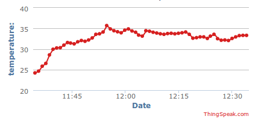

This is the sixth part of a multi-part series on Micropython. In this post, we will upload .py files to an Adafruit Feather Huzzah ESP8266 board using Python and a Python package called ampy. At the end of the post we will have a working WiFi weather station that will post the temperature to ThingSpeak.com
Before we can use the Microython REPL (the Micropython prompt) running on the Adafruit Feather Huzzah ESP8266, Micropython needs to be installed on the ESP8266 board and PuTTY needs to be installed on the computer to communicate with the board over a serial connection. See a previous post on how to install Micropython on an ESP8266 board and how to install PuTTY on a Windows 10 machine.
Summary of Steps:
- Install ampy with pip
- Write Python code in .py files
- Upload the .py files to the board with ampy
- Unplug and power up the Feather Huzzah and watch the data on ThingSpeak.com
1. Install ampy with pip
Ampy is a tool written by the good folks at Adafruit. Ampy is used to upload files onto the ESP8266. Since I'm using a virtual environment, I need to activate the virtual environment first before installing ampy. Note that the tool is called ampy, but we pip install ampy-adafruit.
$ conda activate micropython
(micropython) $ pip install ampy-adafruit
(micropython) $ ampy --help
2. Write Python code in .py files
Now we need to write the Python code in .py files that will run on the ESP8266 board. The board already contains two main Python files: boot.py and main.py. We can also add additional files to the board. boot.py is the file that runs first when the board is powered up. After boot.py runs, then main.py runs. We can add other .py files to the board to provide main.py some functions and classes to work with. We have two general things to do with our Feather board: read the temperature and post the temperature to the ThingSpeak.com. We'll use a different .py file for each of these two general tasks.
The first module, MCP9808.py, will simplify reading temperature data off of the Adafruit MCP9808 temperature sensor breakout. We need to write a readtemp() function that parses out the temperature data from the I2C bus and outputs the temperature as a float. The readtemp() function needs to import the machine module to use the I2C bus. The machine module allows us to create a new I2C object. When we instantiate the I2C object object, we need to specify the scl and sda pins connected to the sensor. scl is the I2C clock line and sda is the I2C data line. on the Adafruit Feather Huzzah scl is pin 5 and sda is pin 4 . Then a new byte array variable needs to be created.
A byte array is needed to store the temperature data when it comes over the I2C line from the sensor to the board. Then we need to read the sensor data using the i2c.readfrom_mem_into() function. The first argument is the I2C bus address of the sensor. In our case, the sensor is at I2C bus address 24. You can use the line >>> i2c.scan() in the Micropython REPL to see this value. The next argument passed to the i2c.readfrom_mem_into() function is the register on the MCP9808 temperature sensor where the temperature value is stored. The temperature is stored on the MCP9808 in register 5. When we access register 5 on the MCP9808, we read in the temperature. The final argument passed into the i2c.readfrom_mem_into() function is the byte array variable that stores the temperature data. The i2c.readfrom_mem_into() function modifies the variable passed to it as a function argument, rather than producing a variable which is the function output as most functions do. This is why we needed to first create the byte_data variable before calling the i2c.readfrom_mem_into() function. Finally, we need to do some post processing of the byte array to transform it into a temperature in degrees C. The complete readtemp() function is below:
# MCP9808.py
# Functions for the MCP9808 temperature sensor
# https://learn.adafruit.com/micropython-hardware-i2c-devices/i2c-master
def readtemp():
import machine
i2c = machine.I2C(scl=machine.Pin(5), sda=machine.Pin(4))
byte_data = bytearray(2)
i2c.readfrom_mem_into(24, 5, byte_data)
value = byte_data[0] << 8 | byte_data[1]
temp = (value & 0xFFF) / 16.0
if value & 0x1000:
temp -= 256.0
return temp
Now we'll build a Python file that contains a set of WiFi functions called wifitools.py. We used this same functionally in a previous post to connect the ESP8266 to a WiFi network. In addition to the WiFi functions, we also need a function to build the ThingSpeak.com web API URL. This is the URL we will request in order to get our temperature posted on ThingSpeak.com.
#wifitools.py
# Wifi connection and ThingSpeak.com post functions for an ESP8266 board running Micropython
#https://docs.micropython.org/en/v1.8.6/esp8266/esp8266/tutorial/network_basics.html
def connect(SSID,password):
import network
sta_if = network.WLAN(network.STA_IF)
if not sta_if.isconnected():
print('connecting to network...')
sta_if.active(True)
sta_if.connect(SSID, password)
while not sta_if.isconnected():
pass
print('network config:', sta_if.ifconfig())
#https://docs.micropython.org/en/v1.8.6/esp8266/esp8266/tutorial/network_tcp.html
def http_get(url):
import socket
_, _, host, path = url.split('/', 3)
addr = socket.getaddrinfo(host, 80)[0][-1]
s = socket.socket()
s.connect(addr)
s.send(bytes('GET /%s HTTP/1.0\r\nHost: %s\r\n\r\n' % (path, host), 'utf8'))
while True:
data = s.recv(100)
if data:
print(str(data, 'utf8'), end='')
else:
break
def thingspeak_post(API_key,data):
if not isinstance(data, str):
data = str(data)
if not isintance(API_key, str):
API_key = str(API_key)
base_url = 'https://api.thingspeak.com/update'
API_key = '?api_key=' + API_key
field = '&field1='
url = base_url + API_key + field + data
http_get(url)
Now let's write a script in a file called main.py which will use the functions in our wifitools.py and MCP9808.py files. This main.py script will import our MCP9808 and wifitools modules and use the wifitools.connect() function to connect the ESP8266 to a WiFi network. There is a time.sleep(5) line to allow the board time to connect to the WiFi network. Next we'll run a loop for a total of 8 hours (with 60 minutes in each hour). Inside the loop, we'll read the temperature off the MCP9808 using the MCP9808.readtemp() function and post the temperature to ThingSpeak.com using the wifitools.thingspeak_post() function. To read the temperature once a minute, we need to time.sleep(60) (wait 60 seconds) between each measurement. I also have one more .py file called config.py. This file simply contains three variables: SSID, WIFI_PASSWORD and API_KEY. By using a config file, we can keep our passwords and API keys out of version control. Like functions and classes, we can import variables defined in .py files for use in another script.
# main.py
# Adafruit Feather Huzzah ESP8266 WiFi Weather Station
import wifitools
import MCP9808
import time
import config
api_key = config.API_KEY
ssid = config.SSID
password = config.WIFI_PASSWORD
wifitools.connect(ssid,password)
time.sleep(5)
for i in range(8*60):
data = MCP9808.readtemp()
wifitools.thingspeak_post(api_key,data)
time.sleep(60)
3. Upload the .py files to the board with ampy
Once all the .py files are created, ensure the Adafruit Feather Huzzah ESP8266 board is connected with a USB cable to the computer. You will also need to know what serial port the Feather board is connected to. We'll upload the code files to the board using ampy. Make sure you are in the directory with the .py files and that you are working in the (micropython) virtual environment that has ampy installed in it.
$ conda activate micropython
(micropython)$ ampy --port COM4 put MCP9808.py
(micropython)$ ampy --port COM4 put wifitools.py
(micropython)$ ampy --port COM4 put main.py
(micropython)$ ampy --port COM4 put config.py
(micropython)$ ampy --port COM4 ls
boot.py
wifitools.py
MCP9808.py
config.py
main.py
4. Unplug and power up the Feather Huzzah and watch the data on ThingSpeak.com
The Feather Huzzah needs to be restarted to run the code we just uploaded. To restart the board, unplug and then replug the board's power. Once power is restored, the board will run through the boot.py script then start the main.py script. When the board runs the main.py script, the board will connect to the WiFi network, read the temperature from the sensor then upload the temperature to ThingSpeak.com. If we go to ThingSpeak.com, we should see the temperature plotted on our Channel's page.

Congrats! You have a working weather station that is part of the Internet of Things.
Now you can read the temperature from anywhere in the world with an internet connection!